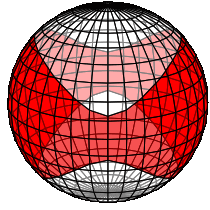

Hi, I'm Lucas - You probably landed here either because I
gave you a link, or because you googled me. In the latter case, 'Yay me!',
someone googled me!
Currently, I'm spending my time pursuing a Ph.D. at Princeton University in
Geophysics. My guide on this journey is mainly Jeroen Tromp with the
occasional advice from Frederik J. Simons. My main focus in research lies on
full-waveform Centroid Moment Tensor (CMT) inversion at global scale.
Secondary focuses are on numerical modeling in general, high performance
computing, and then I also like anything remotely related to seismology.
I started this page originally to promote reproducibility in research.
Meaning, all my codes are published and accessible by anyone of interest.
Sharing is caring! You can find them in the research section of this page.
The page has however sort of become a playground for HTML.
So, if you have any questions, feel free to contact me via email or on
github. And, sorry for making you look at my html funhouse.
Ph.D. Candidate
Department of Geosciences➹
Princeton University➹
Graduate Student Helper
Princeton Institute for Computational Science and Engineering (PICSciE)➹